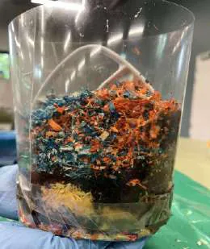
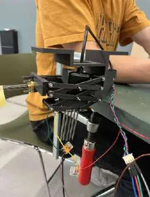
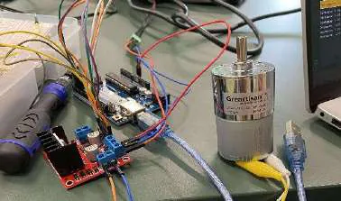
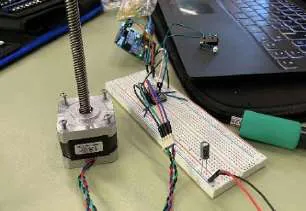
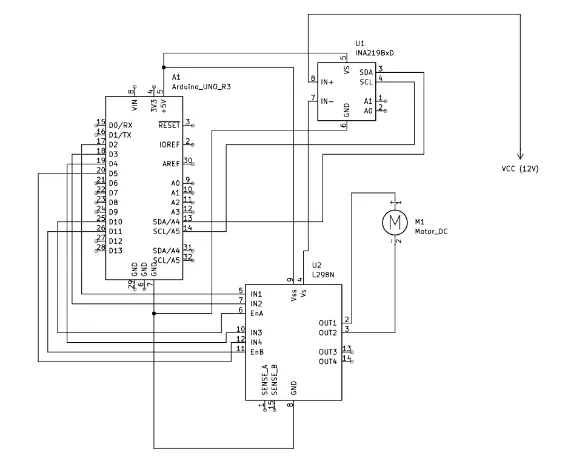
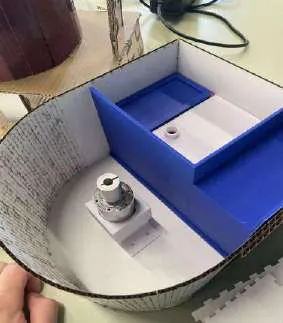
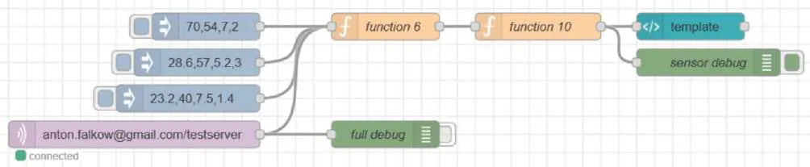

Kursus 41029 Design af mekatroniske systemer 2 · DTU · hold på 8
Compost Buddy: intelligent kompostbeholder
En kompostbeholder til folk i lejligheder, der overvåger sin egen temperatur, fugtighed og pH, rører selv og tilsætter vand efter behov.
- Sammenhæng
- Kursus 41029, DTU
- Hold
- 8 personer
- Min rolle
- Elektronik, omrøringsmekanisme, vandhåndtering, CAD, stykliste
- Værktøjer
- ESP32, Arduino, Node-RED, MQTT, CAD
- 4 L
- inderbeholder
- 1,5 L
- vandtank
- 3
- delsystemer: omrøring, sensorløft, vanding
Hvad vi byggede
Compost Buddy er en kompakt kompostbeholder til folk i lejligheder. Den måler forholdene i komposten, rører den og tilsætter vand efter behov; brugeren følger med på et dashboard.
- En udtagelig inderbeholder på 4 L og en vandtank på 1,5 L.
- En omrøringsarm på en 12 V DC-gearmotor, drevet gennem en L298N H-bro. En INA219-strømsensor registrerer, når motoren blokeres, og armen skifter retning.
- En saksemekanisme på en stepmotor (DRV8825-driver, endestop) sænker jordsensoren ned i komposten og løfter den fri, før armen drejer.
- Jordsensoren sender temperatur, fugtighed og pH via RS485. Vand tilsættes med en membranpumpe på et transistorbaseret holdekredsløb.
- En ESP32 sender målingerne via MQTT til et Node-RED-dashboard, der advarer brugeren, når en værdi overskrider en grænse.
- Reguleringsregler fra litteraturen: hold fugtigheden omkring 40–60 %, og tilsæt vand, hvis pH falder under 6.

Min del
Vi førte enheden fra opgavebeskrivelse til en prototype med fuld systemintegration i sprints efter V-modellen.
- Valg af elektronik og sensorer.
- Den motoriserede omrøringsmekanisme med tilhørende saksemekanisme og fastgørelse.
- Måling af vandstand og vandhåndtering.
- CAD-modellen og styklisten.
Resultater og begrænsninger
Betaprototypen fungerede som et selvstændigt system, der måler og vender kompost. Vi testede den med savsmuld og kaffegrums, ikke rigtig kompost.
Undervejs mistede vi en strømforsyning og en Arduino og måtte løse kommunikationsproblemer mellem komponenterne. En peristaltisk pumpe fungerede ikke med vores slanger, så vi skiftede til en membranpumpe. Efter designgennemgangen gjorde vi inderbeholderen og omrøringsarmen aftagelige af hensyn til rengøring. Den færdige enhed blev større end planlagt på grund af de mekaniske deles størrelse.













